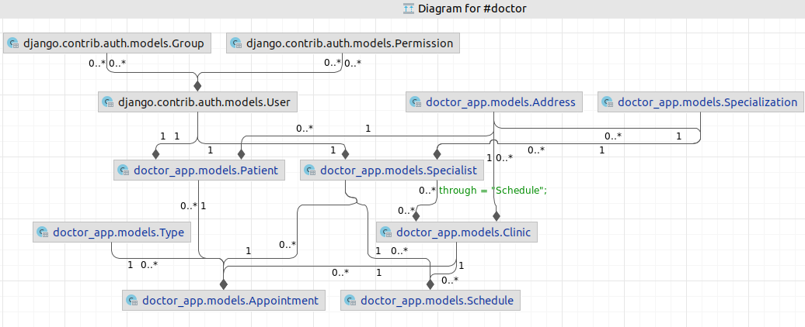

{% extends 'doctor_app/base.html' %}
{% load static %}
{% block zawartosc %}
{{ weather.city}}
{{ weather.temperature }}° C
Progress is impossible without change,
and those who cannot change their minds,
cannot change anything. (George Bernard Show)

Design assumptions:
- Patient and Specialist may update its own data.
- Access to application features depends on permissions.
My Trello
Co ważniejsze dla sukcesu, talent czy pracowitość?
A co ważniejsze w rowerze, przednie czy tylne koło? (George Bernard Show)
{% endblock %}